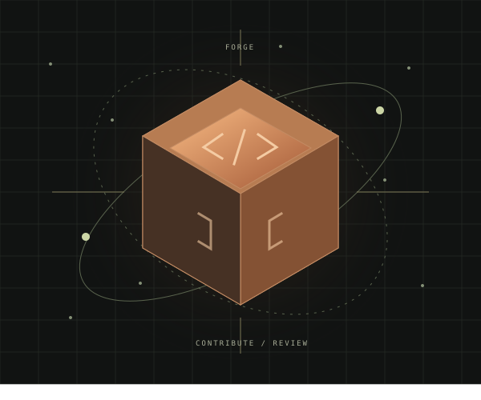

A MARKETPLACE FOR BUILDERSShip great code.
Make it count.
Find meaningful work. Set clear expectations.
Explore a better way to fund the open-source frontier.
Built around Stellar. Designed for real contribution.This independent concept is not a live marketplace.

THE CONTRIBUTION ENGINEBLUEPRINT / NOT ON-CHAIN Great code in.
Clear outcomes out.
4open sample bounties
4,250 USDCillustrative open rewards
19,000 XLMillustrative open rewards
Different units. No conversion.
Sample amounts, not funded balances.
LESS SCROLLING. MORE SHIPPING.
Your next good problem.
Fictional projects and unverified sample rewards. “Open” describes local demo state, not funded escrow.
A CLEAR PATH FROM IDEA TO IMPACT
Less trust me.
More show me.
The production idea is simple.
The boundaries of this demo are, too.
DEFINEMake the work clear.
Requirements, acceptance criteria and an agreed reward. Try drafting a fictional bounty in this browser.
CONTRIBUTELet the code speak.
Claim a sample and attach a GitHub PR URL. This demo checks URL shape and repository only, not existence or authorship.
REVIEWHuman judgment first.
Switch demo identities for an owner review. Local completion is just a state change, never a payment.
THE PRODUCTION BLUEPRINTCode is the proof.
The contract holds the funds.
That is the intended architecture, not a feature claim about this static prototype.
01 / ESCROWSoroban, not a frontend balance.A production contract would verify assets, signatures, state and settlement.
02 / ACCEPTANCEA merge is not an approval.The owner decides. GitHub verification and on-chain approval are not connected here.
03 / ASSISTANCEHelpful, never in control.AI may advise in a future implementation. This demo has no AI provider or financial authority.
BEFORE YOU START
Good questions.
Straight answers.
Is this connected to Stellar Testnet?
No. There is no RPC, wallet, issuer verification, contract, signature or transaction. All rewards are fictional labels.
Can I earn or deposit funds here?
No. Claiming, approving, completing and refunding change in-memory sample records only. Refreshing resets them.
Are pull requests actually verified?
Only HTTPS GitHub URL shape and the expected owner/repository are checked locally. Existence, PR author, commits and merge status remain unverified.
Where is my draft saved?
In this browser tab's memory, up to 12 total samples. Nothing is uploaded or persisted. Reloading clears all changes.
The next great thing
starts with a good problem.
Explore the samples < / >